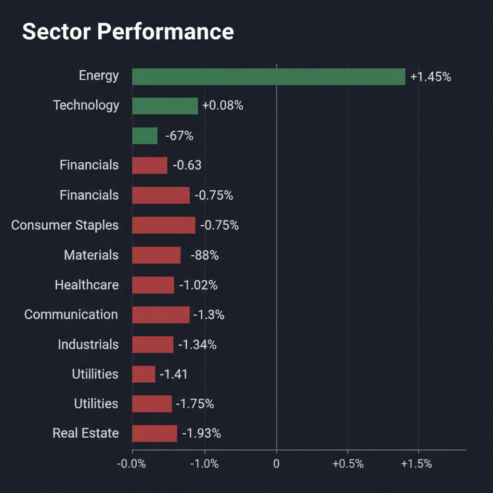
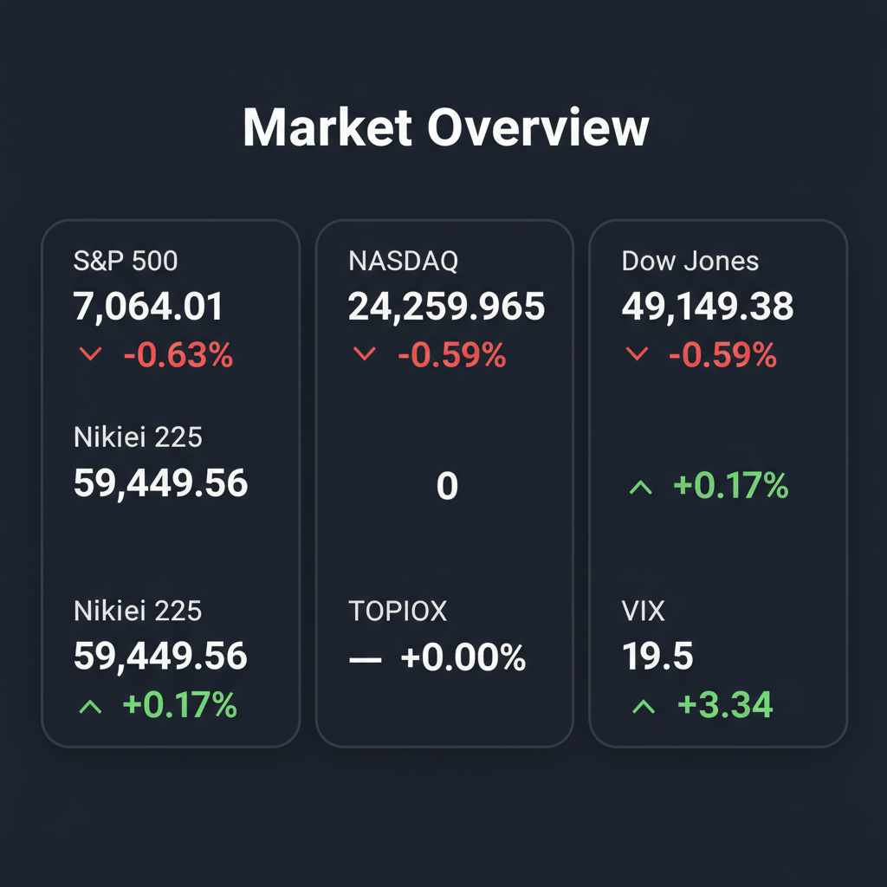

Daily Investment Report - 2026-04-22
Generated: 2026/4/22 14:46:16


投資家向け最終アクションレポート
1. エグゼクティブサマリー
- S&P500や日経平均が歴史的高値圏にある中、原油価格の100ドル接近や中東情勢の緊迫化により、インフレ再燃と金利高止まりの懸念が急速に強まっています。
- VIX指数が危険水域である20に迫っており、相場は「トップライン成長に依存した大型株」から、利益と株主還元を伴う「中小型バリュー株・エネルギー株」へ資金が逃避する選別フェーズへ完全に移行しました。
- 投資家は過剰なリスクテイクやレバレッジ投機を控え、キャッシュ比率の引き上げと厳格なストップロス設定によるディフェンシブな立ち回りを最優先すべき警戒局面です。
2. 注目銘柄リスト
市場のノイズに隠れた中小型株を中心に、チームの分析を統合した投資判断を提示します。
強気（買い推奨）
- 名古屋銀行（8522） [中小型バリュー]: 前期経常益の4％上方修正と70円の大幅増配を発表しました。PBR改善への強いコミットメントと強固な資本効率の裏付けがあり、下値リスクが限定的な安全マージンを持つ銘柄として強く推奨します。
- オービック（4684） [中大型・高収益]: 連続増益・増配見通しに加え、自社株買いを発表しました。テクニカル面でも上方への強いブレイクアウトが確認されており、確実なキャッシュ創出力を持つ避難先として有望です。
- ヘルスケア・ロジスティクス関連（ティッカー非限定） [中小型・裏方銘柄]: GLP-1（肥満治療薬）市場の爆発的拡大に伴い、AmazonやNovo Nordiskなどの割高な大型株を直接買うのではなく、コールドチェーン（温度管理配送）や次世代デリバリー技術を持つ時価総額の小さい裏方企業への選別投資を推奨します。
中立（様子見）
- ミガロホールディングス（5535） [小型グロース]: 顔認証技術を活用した不動産DXを展開しており、将来的なテンバガー候補としての巨大な成長余地を秘めていますが、現在の高金利環境下において利益成長トレンドが正当化されるかを見極めるため、決算説明会の内容精査までは様子見とします。
- Toll Brothers（TOL） [中型バリュー]: ローカル住宅メーカー買収によるシェア拡大は好材料ですが、インフレ再燃による金利高止まり懸念から不動産セクター全体が強い下落基調にあるため、マクロ環境が落ち着くまではエントリーを見送ります。
弱気（警戒）
- Spirit Airlines（SAVE） [小型ボロ株]: トランプ政権によるM&A規制緩和期待で急騰していますが、慢性的な赤字と巨額の有利子負債を抱えており、マクロショック時には真っ先に破綻する極めて危険なバリュートラップです。
- SHIFT（3697） [中型グロース]: 経常利益16%の減益というネガティブサプライズを発表しました。高PERを正当化してきた成長ストーリーが崩壊し、テクニカル的にも下落トレンドが明確なため、「落ちてくるナイフ」に手を出してはいけません。
- 農業総合研究所（3541） [小型]: 燃料費高騰などのインフレ圧力が直接的に損益を毀損し赤字転落しました。価格転嫁力を持たない中小型株が直面する典型的な限界利益率悪化のリスクを露呈しています。
3. セクター推奨ランキング
1.
エネルギー（XLE）：中東の地政学リスクを背景とした原油高（1バレル100ドル近辺）の恩恵を直接受けるため、ポートフォリオのインフレ・テールリスクヘッジとして現在唯一の買いセクターです。
2.
金融（銀行株）：金利高止まりによる利ざや拡大の恩恵を受けやすく、特に日本市場においては株主還元（増配・自社株買い）を強化する地方銀行などに資金の逃避先としての魅力があります。
3.
ヘルスケア（GLP-1テーマ）：マクロ景気に左右されにくい構造的な需要増が見込めますが、大型株にはすでに過度な成長期待が織り込まれているため、関連する中小型株の発掘が条件となります。
4.
情報技術・ITサービス（XLK/日本の中小型IT）：高PER銘柄が多く、企業のコスト削減圧力によるIT投資の先送りや、金利高止まりによるマルチプル・コントラクション（バリュエーション低下）のリスクに晒されています。
5.
不動産（XLRE）および公益事業（XLU）：インフレ再燃による「利下げ観測の後退」が最も直撃する金利敏感セクターであり、支払利息の増加がキャッシュフローを圧迫するため、最も避けるべきセクターです。
4. 今週の注目イベント
- 4月22日〜24日：米国の主要企業決算発表（テスラ、ボーイング、IBM、ギリアド・サイエンシズ、AT&Tなど）
- 日程未定：次期FRB議長候補ウォーシュ氏の上院承認公聴会の動向（タカ派・ハト派の発言確認）
- 日程未定：米国・イラン間の停戦延長交渉の行方および新たな制裁関連のヘッドライン
5. リスク要因
- 中東情勢の決定的エスカレーション：イランによる港湾・ホルムズ海峡封鎖などが発生した場合、原油価格が一気に暴騰し、世界的なスタグフレーション（物価高と不況の併発）を引き起こすリスク。
- FRBの政策ミス（独立性喪失）：政治的圧力によりインフレ下で利下げを強行した場合、市場がドルへの信認を失い、かえって長期金利が暴騰するリスク。
- VIX上昇に伴うフラッシュ・クラッシュ：VIX指数が20を上抜けた場合、アルゴリズム取引やボラティリティ・ターゲットファンドによる機械的な売りが連鎖し、相場が瞬間的に急落するリスク。
- 日本株の集中リスクとブルトラップ：日経平均が史上最高値を更新しつつも長い上ヒゲを形成しており、一部の値がさ株に依存した歪な上昇が、海外勢のリスクオフ姿勢によって一気に巻き戻されるリスク。
6. アクションアイテム
- キャッシュ比率の大幅な引き上げ：新規の買いポジション（特に大型テクノロジー株や高PERグロース株）の構築を停止し、投資資金の余力を最大化してください。
- 厳格なストップロスの設定：日経平均が高値圏で乱高下しているため、保有しているロングポジションには直近の押し目安値にトレイリング・ストップ（逆指値）を設定し、利益を確実に保護してください。
- 小規模な地政学ヘッジの構築：ポートフォリオ全体の保険として、エネルギー関連ETF（XLE）の維持、またはVIXの上昇を見込んだコールオプションの購入を少額検討してください。
- ハイリスク投機の完全停止：M&A期待の赤字ボロ株（Spirit Airlines等）への投資や、予測市場での高レバレッジ暗号資産デリバティブなど、破綻リスクのある投機的取引から直ちに資金を引き上げてください。